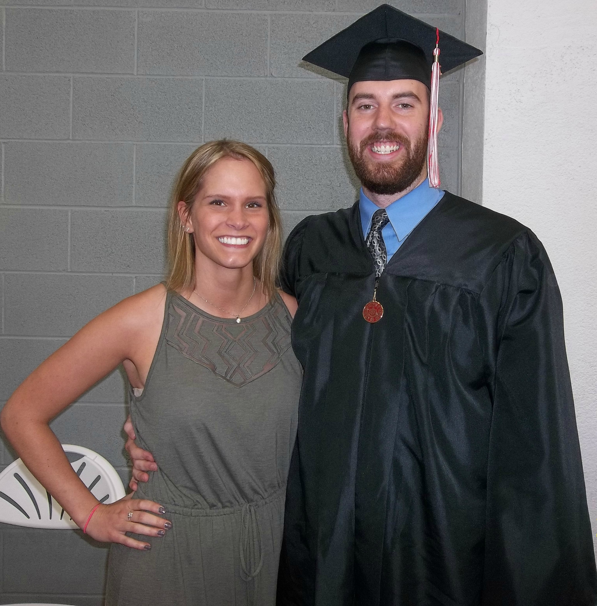
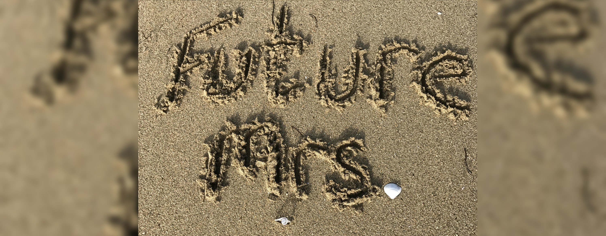

Her Story: The Proposal
It happened in May of 2017. We were in the Dominican Republic taking our first real vacation together - we were celebrating how we were both officially done with college. On that special day, we had made reservations at one of the resort's restaurants. Later on, we were both on the beach just trying to relax when Philip said that he forgot to put on sun screen. He truly did forget because his shoulders didn't have that sticky, sun screen feeling. So, he left but he was gone for roughly 45 minutes it seemed like. I was getting ready to send a search party out for him! Anyways, he came back and said that while he was going back to the room to get sun screen, the man we made reservations with for the restaurant said there were some earlier dinner openings due to cancellations and had Phil go back with him to choose a time. Dinner was then moved to 6:30pm, originally it was 8:30pm. So I was all about that, I knew I would be starving by 8:30pm. While I probably should have been more suspicious, it was an all-inclusive resort so the both of us were drinking a lot, all day every day. ANYWAYS, the night of we got ready for dinner and we're walking towards the beach, that's where the restaurant was, and we turn the corner and there is this BEAUTIFUL beach dinner table set up. I knew instantly it was Phil's doing and that that's what he was doing during the length of time he was gone earlier in the day. I started to tear up because it was so sweet! While we were eating one of the courses to our dinner, a photographer that takes pictures for the resort came up to us wanting to take our picture and I thought, "Holy cow, Phil might actually propose!" After we get done posing for a few, the photographer leaves and says we can pick up the pictures the next day. So, now I'm a little sad because I got my hopes up, but I was still wanting to enjoy this time with him because it was such a sweet gesture and a beautiful set up. While waiting for the next course, Phil asks for my phone to have someone else take pictures before the sun completely sets. He takes my phone and gives it to a restaurant worker (I didn't know this at the time, but he apparently pulled the ring out to try and explain to the man to not stop taking pictures). They both come back to the table, we take a picture and Phil asks me to check it to see if it's okay. I was confused because he knows I don't typically check my pictures because I don't care too much as to how I look in them. However, I'm glad I did because my hair was all over the place since the wind was coming from behind us. We angled ourselves differently for the next couple pictures and when I was about to get my phone back, Phil goes down on one knee. Before anything was said I was bawling my eyes out because that was easily the happiest moment of my life!!! He pulled out a ring and asked me to marry him! I didn't even get to look at the ring and I barely nodded my head because I was crying so much because I was so surprised and happy all at once! So, Phil just put the ring on my finger anyways (which I was totally fine with) and asked if I was okay and, once again, I just gave a little nod (still crying) and we hugged and kissed and sat back down at the table. I was still shocked, happy, and crying at least 5 minutes after we sat down. Eventually I was able to tell Phil that I thought the ring was absolutely beautiful! After finishing dinner, even though I couldn't really think about the food after our engagement, fireworks start going off in the resort. We aren't sure if they were set off for us or not, but we know there weren't events going on that night that would call for fireworks, so we're just saying they were for us :). And that's the story of the greatest night of my life!!!
His Story: The Proposal
I had been planning on asking her to marry me for a long time but wanted to wait until after we were both done with college to not interfere with any of our studies.
I knew that to ask her it to be just right and had got an idea that I should ask her on a beach in a different country. She had never been out of the country before and I wanted to be the one to take her on that adventure. She brought up the idea of taking a trip after her graduation before I could ask her if she wanted to, which helped to hide my plan of the proposal from the start. She even suggested that we do at least one night where we do a nicer dinner and get dressed up for it which was exactly what I was thinking with a slight twist. The resort had a buffet cafeteria for every meal and a restaurant on the beach that you had to make reservations at and we decided to have our nice dinner date on Monday night. We went to the concierge that day to set up our reservations and were a little disappointed we could only get reservations for 8:30PM, though I knew I was going to go back and change the reservation. Happy with our reservations and ready to enjoy the sunshine we went straight to the beach.
Knowing I needed a way to get back to the concierge to set up a different reservation I needed to come up with an excuse. Eventually I came up with the idea of forgetting sunscreen on my arms and shoulders which I did. So I ran back to the concierge asking him to set up a dinner on the beach with a gazebo, path lit by candles, flowers and the works. He gladly set us up for a dinner on the beach at 6:30PM. It took some time to get all of the details figured out and I knew Katie would be suspicious so I made sure to stop at the bar with our favorite bartender, Franklin,
and grab two Pina Coladas before returning. She questioned it but I just explained that I had run into the concierge and he informed me that a spot opened up for 6:30PM and if we wanted to take it, which required me to return to his desk and work it out. After she had the Pina Colada she didn’t question it any more. Towards the end of the day they started to setup the path and the gazebo over the table and I was worried she would notice and think something was going on and even after walking over the path to get ready for dinner I had thought for sure she was on to what I had planned but was none the wiser. We are heading to dinner at this point and I am freaking out, surely annoying her because I kept asking her if everything was alright. I still have no idea how she didn’t think something was going on until we turn the corner and can see the table out on the beach she turns to me and hits me asking with a tear in her eye if that was me.
We are enjoying dinner and all when a photographer of the resort comes up to us asking to take pictures and I almost ask her while he is there but wanted to do it my way so I decided to wait.
We are now waiting on the main course and the sun has almost set and losing light quickly which is worrying me more and more. I keep bringing up to her that we should get our own pictures on one of our phones and she does not seem to be having it but I keep pushing until she gives me her phone and I head to the restaurant to find our waiter. He doesn’t speak much English and didn’t understand that I was going to propose and I wanted him to take lots of pictures during it. I realize he isn’t understanding so I end up pulling the ring out to try and get my point across and he quickly understood and followed me back to our table. After taking a couple pictures, I turn to Katie and have her turn towards me. Slowly getting down on one knee, and freaking out the whole time, I see her immediately start bawling and I can only get out “Will you marry me?”
She didn’t say anything just crying and I don’t know what to do or say so I ask if she is ok.
She eventually put her hand out and I put the ring on but she still hadn’t answered me, so I asked again and she nodded, still not saying anything, just hugging me. We eventually get back to the table and I couldn’t tell you how my food was because my stomach was in knots and we struggled to get through our food, Katie couldn’t eat because she kept looking at the ring.
We finally finish our food and are just enjoying deserts when we see fireworks coming from the center of the resort which I will still take credit for setting up.
Best date night ever!